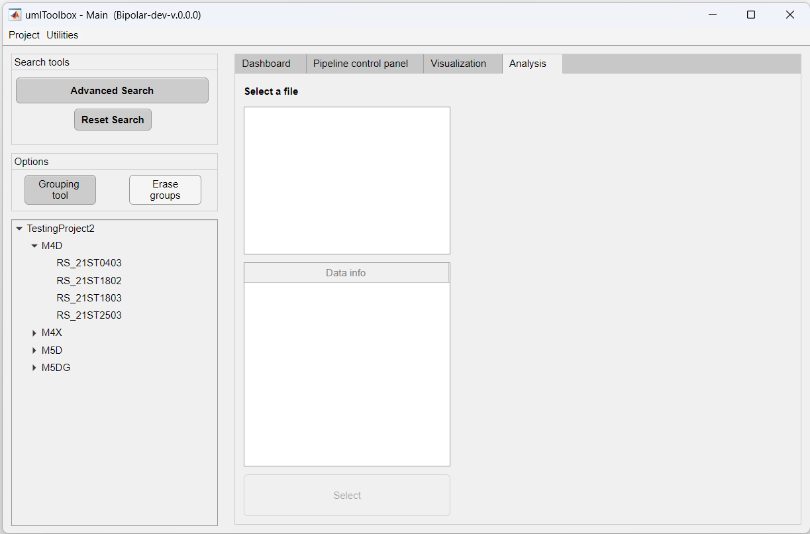
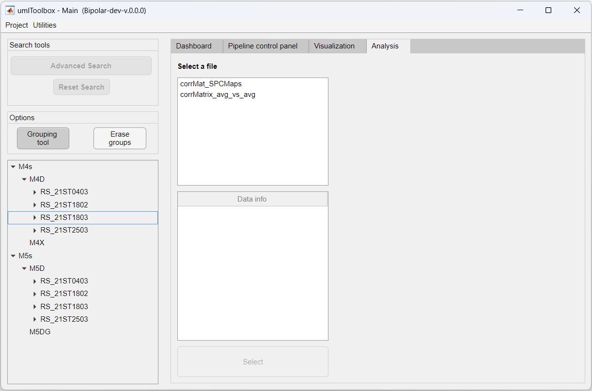

In this tutorial, you will learn how to segregate the subjects and acquisitions into one or more groups for data visualization. This is particularly useful for projects containing different experimental protocols with a large number of subjects. The umIToolbox uses the groups to put together the data extracted from the ROIs to facilitate the data exploration, visualization and statistical analysis.
Note
This feature is available only through the umIToolbox main GUI and not in the standalone version of
DataViewer.
First, open your project file in the main GUI:
umIToolbox( 'C:/FOLDER/projectfile.mat' )
Navigate to the Analysis tab. The data that we will group consists of four recordings of Resting state on four mice:
Here, we will create two groups: one with mice M4D and M4X an the second with the mice M5D and M5DG. To do so, launch the Grouping tool by clicking on its button in the options panel.
By default, a single group is created with the objects currently displayed in the Analysis tab from the main GUI. Now to create the two abovementioned groups, follow these steps:
Now, you can see the two groups in the main GUI:
Note
This is just a basic explanation on the features of the Grouping tool. For more information, read the
documentation of the umIToolbox app.
Now that you created groups, you can explore the grouped data extracted from the ROIs! Check the next tutorial to learn how to visualize grouped data!